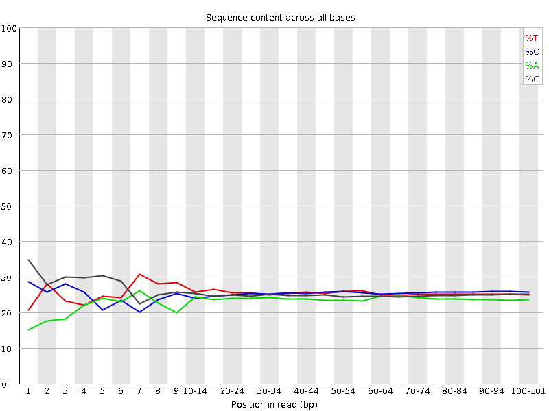
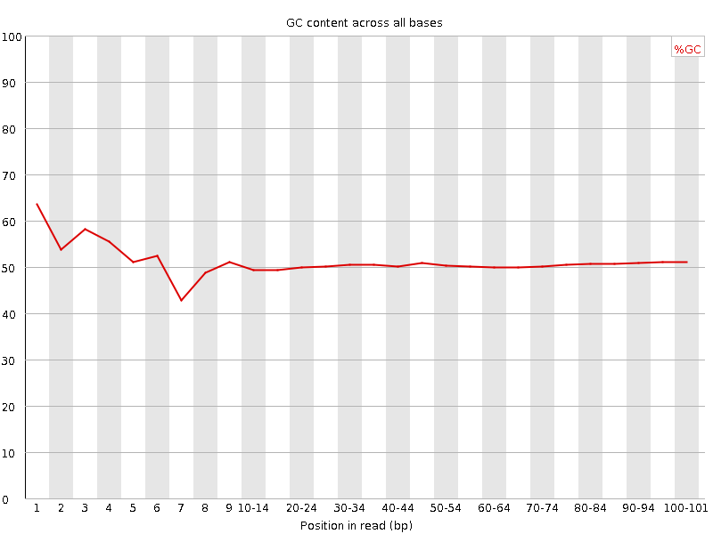
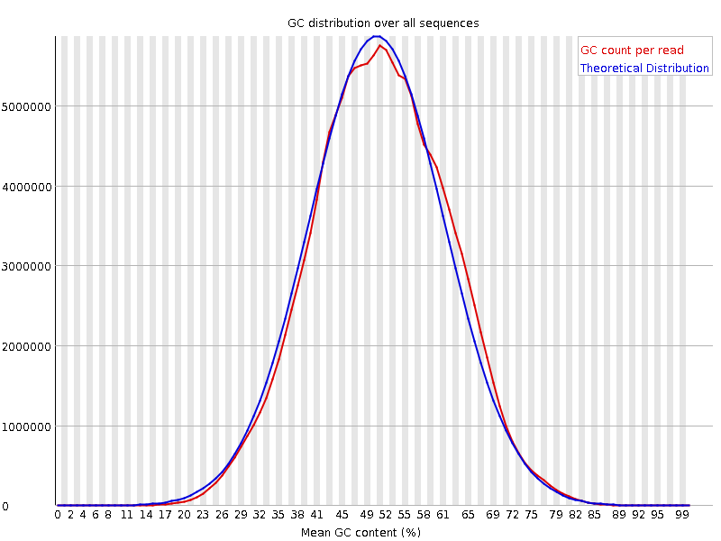
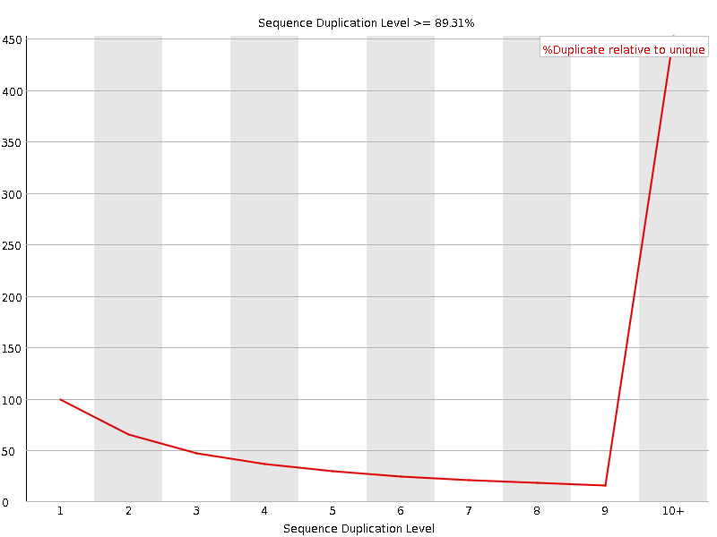
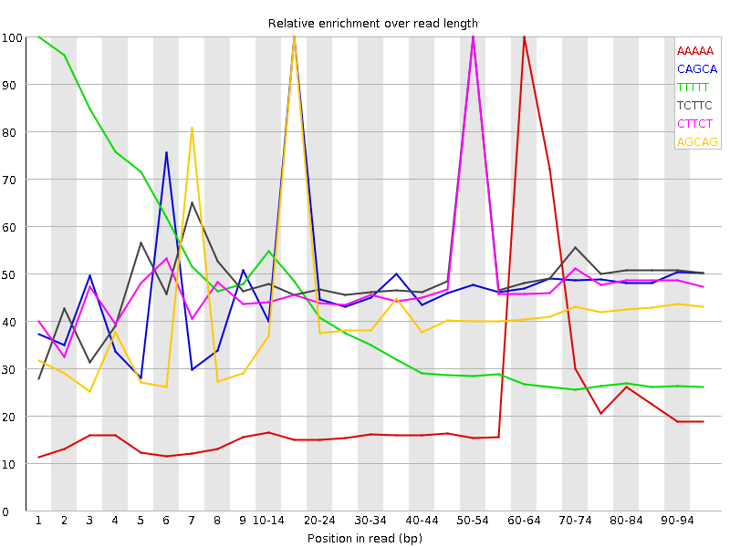

![[OK]](Icons/tick.png) Basic Statistics
Basic Statistics
| Measure | Value |
|---|---|
| Filename | SRR534308_1.fastq |
| File type | Conventional base calls |
| Encoding | Sanger / Illumina 1.9 |
| Total Sequences | 157417872 |
| Filtered Sequences | 0 |
| Sequence length | 101 |
| %GC | 50 |
Per base sequence quality

Per sequence quality scores

![[WARN]](Icons/warning.png) Per base sequence content
Per base sequence content

![[FAIL]](Icons/error.png) Per base GC content
Per base GC content

Per sequence GC content

Per base N content

Sequence Length Distribution

Sequence Duplication Levels

Overrepresented sequences
| Sequence | Count | Percentage | Possible Source |
|---|---|---|---|
| GATCGGAAGAGCGGTTCAGCAGGAATGCCGAGACCGATCTCGTATGCCGT | 2311313 | 1.4682659412395054 | Illumina Paired End PCR Primer 2 (100% over 50bp) |
| CGGTTCAGCAGGAATGCCGAGATCGGAAGAGCGGTTCAGCAGGAATGCCG | 268167 | 0.1703535923799046 | Illumina Paired End PCR Primer 2 (100% over 31bp) |
Kmer Content

| Sequence | Count | Obs/Exp Overall | Obs/Exp Max | Max Obs/Exp Position |
|---|---|---|---|---|
| AAAAA | 58858630 | 5.0874634 | 20.361929 | 60-64 |
| CAGCA | 46280855 | 3.2791564 | 6.6789036 | 15-19 |
| TTTTT | 52749960 | 3.1890154 | 8.932802 | 1 |
| TCTTC | 48248470 | 2.929874 | 5.753896 | 50-54 |
| CTTCT | 47644800 | 2.8932164 | 5.9117284 | 50-54 |
| AGCAG | 37674625 | 2.6936243 | 6.2273417 | 15-19 |
| GCAGG | 38822955 | 2.6134734 | 5.9852915 | 15-19 |
| CAGGA | 36479350 | 2.6081657 | 6.0428324 | 20-24 |
| CTGCT | 38464790 | 2.3622262 | 5.4339833 | 50-54 |
| GGAAG | 31403485 | 2.2656522 | 21.759483 | 5 |
| AGGAA | 29457250 | 2.25718 | 6.060494 | 20-24 |
| GGCAG | 33094760 | 2.2278643 | 5.06457 | 1 |
| TCAGC | 32816175 | 2.1646986 | 5.405379 | 15-19 |
| GAAGA | 27914250 | 2.1389465 | 22.716372 | 6 |
| CTGGG | 33297735 | 2.086858 | 5.3884587 | 1 |
| TTCAG | 31170605 | 2.051584 | 5.290824 | 15-19 |
| TTCTG | 33224050 | 2.0358477 | 5.089071 | 50-54 |
| GAAAA | 22661675 | 1.8442703 | 5.702529 | 60-64 |
| AAGAG | 23187285 | 1.77674 | 22.210445 | 7 |
| AGAGC | 22084675 | 1.5789891 | 20.519495 | 8 |
| TGAAA | 20011310 | 1.5162005 | 5.1727667 | 55-59 |
| GTGGG | 21169165 | 1.3387799 | 5.1967893 | 1 |
| CGGGG | 16098280 | 1.020353 | 5.0035176 | 1 |
| CGGAA | 12851325 | 0.9188318 | 19.824455 | 4 |
| GAGCG | 12889285 | 0.8676775 | 18.625677 | 9 |
| TCGGA | 12476890 | 0.8305066 | 18.398878 | 3 |
| ATCGG | 10979540 | 0.73083764 | 18.177595 | 2 |
| GATCG | 10004745 | 0.6659518 | 18.05345 | 1 |